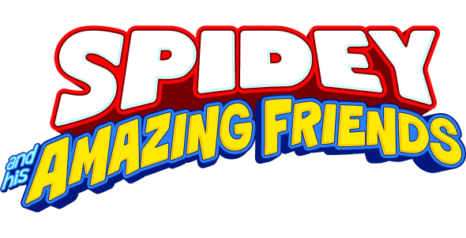
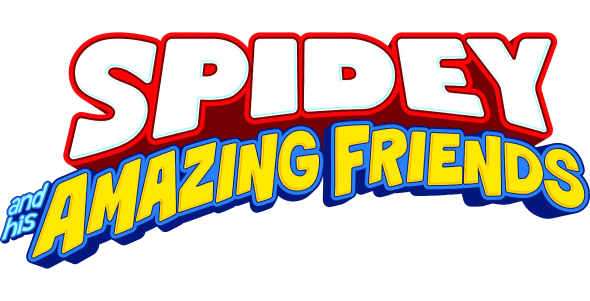
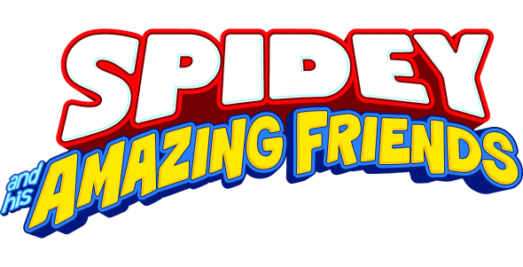
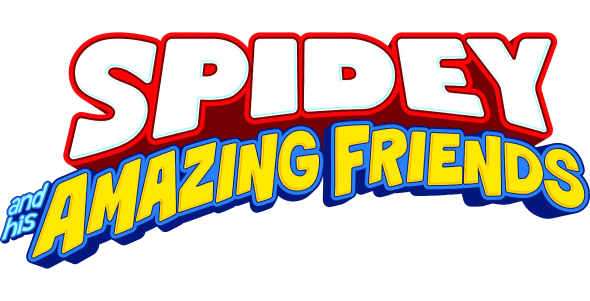

Spidey, nuestro lanzador de telarañas favorito se une a Ghost-Spider (Gwen Stacey) y Miles Morales para formar el equipo de Spidey, con la ayuda del cómico pero leal robot de Spidey, TRACE-E. Si Spidey se encuentra en una situación difícil donde necesita aún más poder de superhéroe, tengan la seguridad de que un amigo de los Vengadores correrá para ayudar.